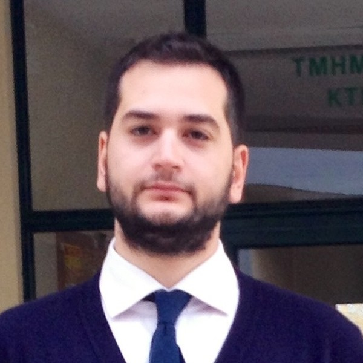

Christos
Liosis
Physicist · PhD in Computational Fluid Dynamics
Postdoctoral Researcher & Academic Fellow, University of West Attica
I am a physicist working on computational fluid dynamics, with a focus on magnetic nanoparticles, micromixers and Tesla valves for water purification and biomedical applications. I build 3D simulations in OpenFOAM and combine them with experiments, additively manufactured sensors and machine learning.
I received my PhD from the University of Thessaly in 2023 and I am now a postdoctoral researcher at the Department of Mechanical Engineering of the University of West Attica, where I also teach. I have been a member of the Flow Analysis and Simulation Team since 2015 and I take part in several European research projects.

- Position
- Postdoctoral Researcher & Academic Fellow
University of West Attica - Research group
- Flow Analysis and Simulation Team
- liosischristos@uniwa.gr
- Profiles
- Google Scholar
· ResearchGate
· ORCID
LinkedIn · GitHub
Research experience
-
2024 – now
Postdoctoral Researcher Department of Mechanical Engineering, University of West Attica
Development of a model capable of guiding, mixing and separating magnetic nanoparticles for water purification and biological applications.
-
2019 – 2023
Doctoral Researcher Department of Civil Engineering, University of Thessaly
Removal of heavy metals from aqueous solutions using magnetic nanoparticles. OpenFOAM simulations and ParaView analysis of the parameters governing the transport and dispersion of magnetic particles in passive and magnetically driven mixers, aiming at optimal nanoparticle distribution.
-
2015 – now
Member, Flow Analysis and Simulation Team fluids.uniwa.gr · University of West Attica
Fluid flow, hydraulics and convective heat transfer: magnetohydrodynamics, turbomachinery, bioengineering, thermal analysis, turbulence, multiphase flow and fluid-structure interaction.
-
2014 – 2018
Master Researcher Department of Energy Technology, University of West Attica
Mixing of magnetic nanoparticles under an external magnetic field: effect of the inclination, intensity and frequency of the field on the dispersion in an active mixer (OpenFOAM, ParaView).
Education
-
2023
PhD in Computational Fluid Dynamics University of Thessaly, School of Engineering, Department of Civil Engineering
Thesis: Modeling for Water Purification from Heavy Metals Using Microfluidic Devices · Supervisor: Prof. Theodoros Karakasidis
-
2018
MSc in Energy Technology Heriot-Watt University – University of West Attica
Thesis: Numerical study of nanoparticles mixing in micropipes · Supervisor: Prof. Ioannis Sarris
-
2017
MSc in STEM Education School of Pedagogical and Technological Education (ASPETE)
Thesis: Developing S.T.E.M. experiments using Arduino, Matlab and their didactic analysis
-
2015
Postgraduate Diploma in Materials Science for Advanced Technologies University of Ioannina – University of Patras – University of Crete
-
2014
BSc in Physics University of Ioannina, School of Sciences, Department of Physics
Teaching
-
2023 – 2026
Electromagnetism and AC Circuit Analysis (NMB.206) Department of Biomedical Engineering, University of West Attica · spring semesters 2023, 2024, 2025, 2026
-
2024 – 2025
Introduction to Fluid Dynamics (MM109E03) Department of Mechanical Engineering, University of West Attica · fall semester
Research projects
-
2026 – 2028
SEEU – Small enhanced European UAS European Defence Fund · EDF-2024-DA-C4ISR-SEEU-STEP
-
2025 – 2028
Verdedrive HORIZON-MSCA Staff Exchanges 2023
Harnessing by-products for the creation of eco-friendly and sustainable diesel fuel.
-
2024 – 2027
PROMATAI HORIZON-MSCA Staff Exchanges 2022
Development and testing of innovative solutions for the processing of hybrid materials and nanomaterials using artificial intelligence algorithms.
-
2024 – 2027
ST3AM Erasmus+ KA220-HED · Cooperation partnerships in higher education
Striving for gender balance via education reformation, 3A factors for advancement, and mentorship in STEM.
-
2023 – 2026
AGRHI Erasmus+ CBHE · ERASMUS-EDU-2023-CBHE-STRAND-2
Agricultural Revitalization in Higher Education Institutions of Asian Countries.
-
2020 – 2021
Magnetic navigation of nanoparticles in real networks of human arteries Project ΕΔΒΜ103 · MIS 5048923
Awards & scholarships
-
2025 – 2026
ARIS supercomputer allocation – GRNET Project «Computational Physics Networks»
150,000 CPU core hours and 50,000 GPU hours.
-
2024 – 2025
ARIS supercomputer allocation – GRNET Project «Homogeneous Turbulence Model»
100,000 CPU core hours.
-
2023
Young Researcher Award ICRAFMN-2023, Bengaluru, India
«Tesla valve as micromixer for water purification with magnetic Fe3O4 nanoparticles»
-
2021
Best Paper Award Int. Conference on Drug Delivery Nanosystems for Biomedical Engineering Applications, Rome, Italy
«Magnetic Navigation of Nanoparticles Inside a 3D Carotid Model»
Academic service
Guest Editor
Symmetry (MDPI), special issue «Advances of Symmetry/Asymmetry in Fluid Dynamics: Engineering Applications and Marine Hydrodynamics», 2025.
Language Editor
- Sarris, Karvelas & Sofiadis, Computational Fluid Dynamics, Kallipos, 2024
- Milionis, Embedded Systems Implementation for Networks and Applications in Linux, Kallipos, 2024
- Sigalas, Koukaras & Charistos, Computational Chemistry and Molecular Modeling, Kallipos, 2024
Co-supervision
Erasmus+ traineeships, University of West Attica – CESI (France):
- J. Kolo – Design of heat exchangers for heat pump applications
- A. Ekelle – Modeling the energy balance of non-interconnected islands
Thesis committees
- Flow study in a wind turbine using computational models
- Performance study of a Tesla valve through numerical simulation
- Machine learning models for the prediction of aerodynamic coefficients in turbulent flows
Skills
Continuing education
-
06/2023
BioMed AI Summer School Academy of Athens
-
2020 – 2021
Expert in Finite Element Analysis National and Kapodistrian University of Athens
-
2017
LaTeX University of Piraeus
-
2017
Programming with Python Aristotle University of Thessaloniki
-
2016
Arduino Hellenic Physical Society
-
11/2015
National Training Programme of Greek Physicists CERN
Languages & memberships
Languages
- Greek – native
- English – C2 (City and Guilds Mastery)
- Spanish – B1
Memberships
- Hellenic Physical Society (EEF)
- European Physical Society (EPS)
- Hellenic Education Society of STEM